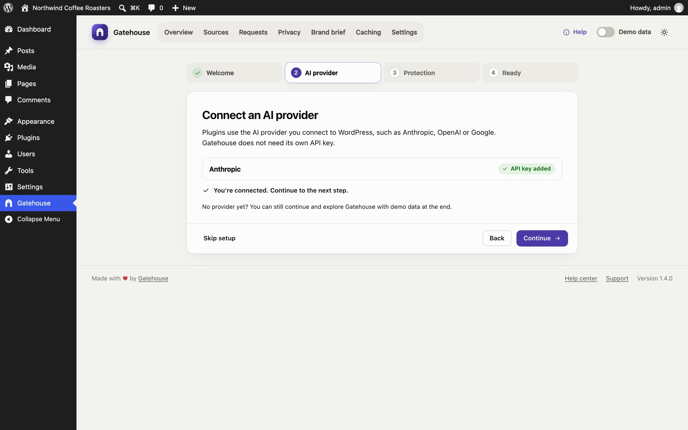
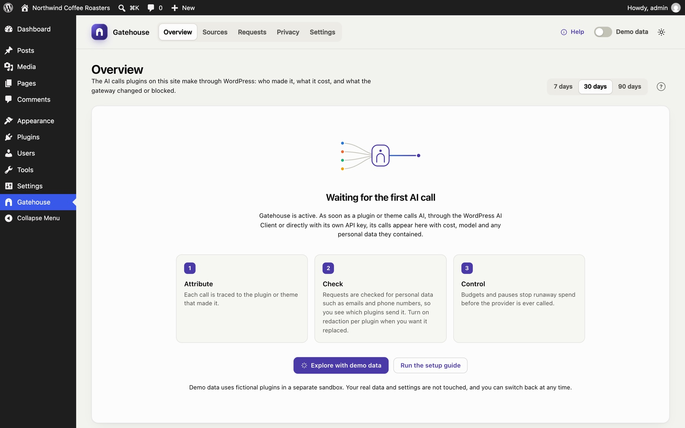
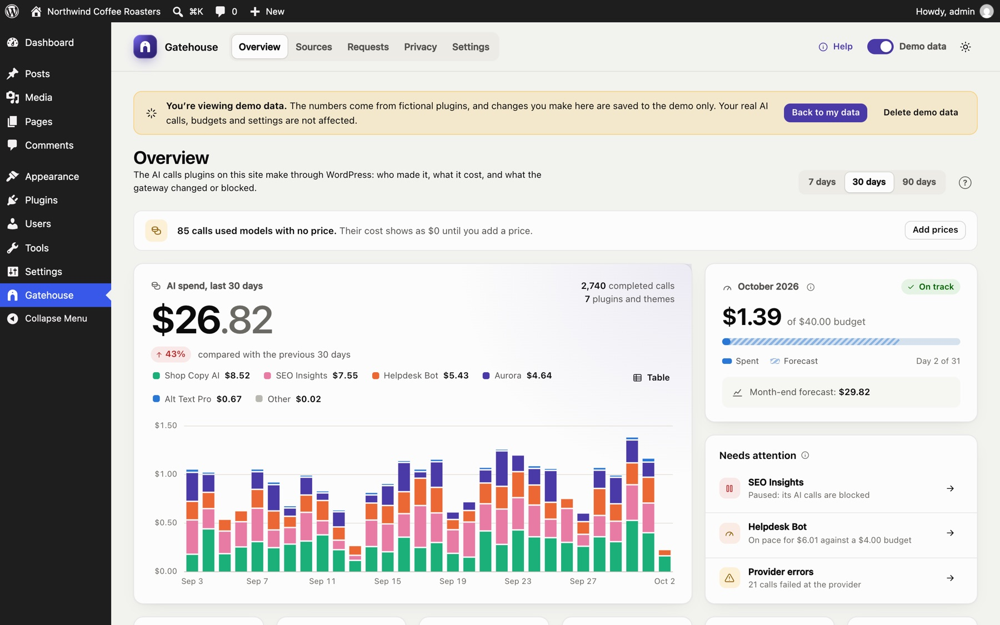
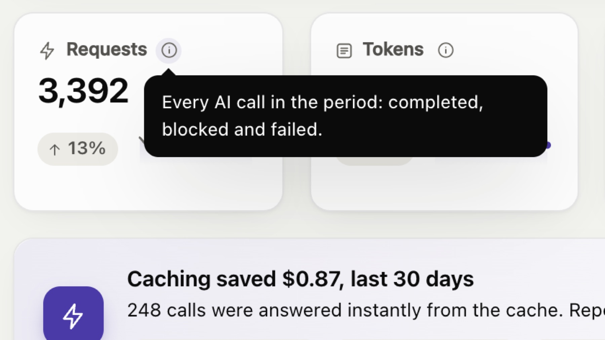
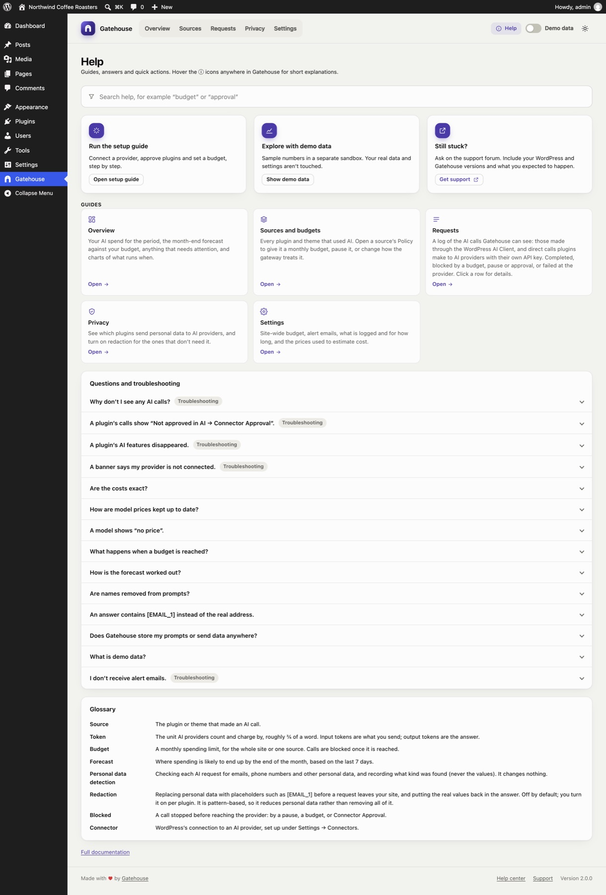
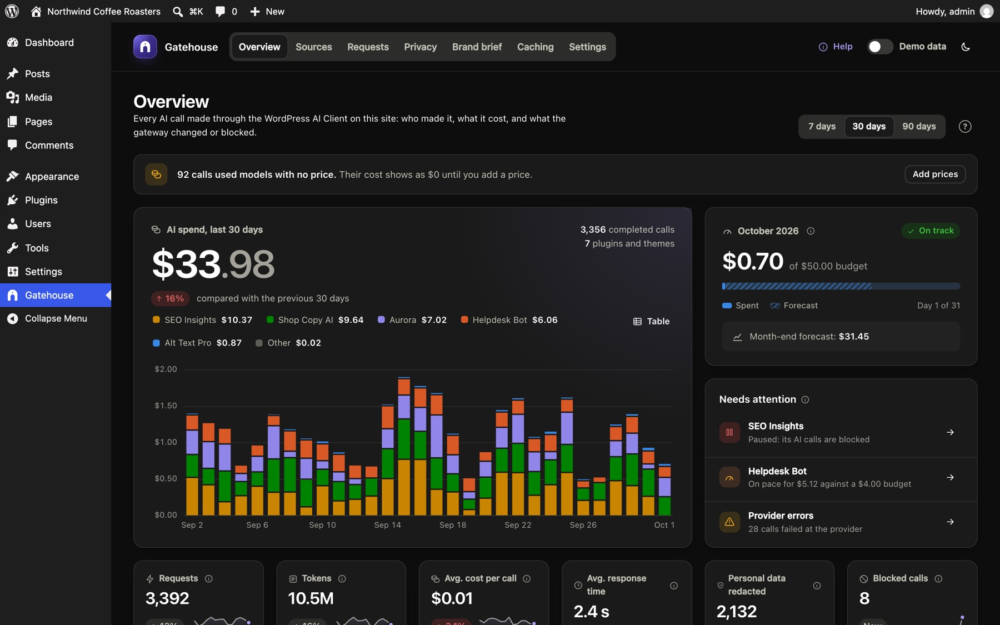

Getting started
Requirements#
- WordPress 7.0 or later.
- PHP 7.4 or later.
- An administrator account. Only users who can manage options (administrators) can see Gatehouse or change its settings.
- Plugins that use AI in a way Gatehouse can see (below).
What Gatehouse can and can't see#
- It sees plugins and themes that use the WordPress AI Client built into WordPress 7.0, and plugins that call Anthropic, OpenAI, Google, OpenRouter, xAI, Mistral, DeepSeek, Groq or Perplexity directly with their own API key, through WordPress's HTTP functions.
- It can't see plugins that send AI requests to their own service (many SEO, page builder and form plugins work this way), or that bypass WordPress's HTTP functions. No WordPress plugin can.
- Streamed answers (common for chatbots): when the plugin reads the stream itself, Gatehouse sees and can block the call, but the token counts aren't available, so it has no cost. Hourly limits still count it.
Install#
- Download
gatehouse.zipfrom the latest release on GitHub. - In WordPress, go to Plugins → Add New → Upload Plugin, choose the zip, then click Install Now and Activate.
- A new Gatehouse item appears in the admin menu.
Once Gatehouse is listed on WordPress.org, you'll also be able to install it from Plugins → Add New by searching for Gatehouse.
There is nothing else to set up. Gatehouse starts watching AI calls as soon as it is active.
Connect an AI provider (for the AI Client)#
Gatehouse does not call AI itself and does not need its own API key. Plugins that use the WordPress AI Client need a provider connected to WordPress. Plugins that use their own API key don't, and Gatehouse sees them anyway.
- Install a provider plugin, such as AI Provider for Anthropic, AI Provider for OpenAI or AI Provider for Google.
- Go to Settings → Connectors and add your API key.
If no provider has an API key yet, the Overview shows a banner with a link to Connectors. See Troubleshooting.
The setup guide#
After you activate Gatehouse, a short setup guide opens. It takes about two minutes:
- Welcome: what Gatehouse does.
- Connect an AI provider: shows each installed provider and whether it has an API key. If none does, it walks you through installing a provider plugin and adding the key, with buttons that open the right screens. Click Check again when you're done.
- Approve plugins that use AI: shown only if your site uses the AI plugin's Connector Approval feature. See Connector Approval.
- Set up safeguards: a monthly budget for the whole site, an hourly call limit per plugin, alert emails, automatic price updates and personal-data detection.
- Ready: go to your dashboard, or explore with demo data.

Skip setup closes the guide. You can reopen it any time from Help → Run the setup guide.
Connector Approval#
Some sites use the official AI plugin's Connector Approval feature. It requires an administrator to approve each plugin before that plugin can use AI. When it is on:
- Calls from unapproved plugins are blocked. Gatehouse logs them as Blocked, with the note "Not approved in AI → Connector Approval".
- The Overview names the plugins waiting for approval, with a Review approvals button that opens Tools → Connector Approval.
- Gatehouse itself never needs approval, because it never calls AI. If you see "Gatehouse" on the approval screen (versions before 1.2 could trigger this when checking providers), you can deny or ignore it.
Your first day#
Until a plugin or theme makes its first AI call, the Overview shows a short explanation and two buttons: Explore with demo data and Run the setup guide.

After the first call:
- the Overview fills with spend, charts and activity;
- the plugin appears on the Sources page;
- the call appears in the Requests log.
Explore with demo data#
Turn on the Demo data switch at the top right of Gatehouse, or click Explore with demo data. Gatehouse fills a separate sandbox with about two months of sample traffic from fictional plugins, so you can try every page.

- Your real data is safe. Demo data never mixes with your real log, budgets or settings, and real AI calls keep being controlled by your real settings.
- The banner tells you where you are. While demo data is on, a banner says so on every page. Changes you make, such as budgets or limits, are saved to the demo only.
- Back to my data switches back. Your demo data is kept for next time.
- Delete demo data removes the sandbox completely.
Demo mode is per administrator: other administrators keep seeing real data.
Help inside the plugin#
Click Help at the top right of Gatehouse. You'll find:
- search across everything;
- quick actions: re-run setup, demo data, support;
- a guide for every page;
- answers to common questions and troubleshooting;
- a glossary.
On each page, the ? button next to the page title opens the help for that page. Throughout the dashboard, hover or click an ⓘ icon for a short explanation of a term or number.


Recommended setup#
The setup guide covers the essentials. Afterwards:
- Give heavy users their own budget and limit. On Sources, open a plugin's Policy and set a monthly budget and an hourly call limit.
- Review privacy after a few days. On Privacy, see which plugins send personal data, and turn on redaction for the ones that don't need the real values. Add names or terms to watch for.
- Keep an AI data map. On Privacy, download the CSV for your records.
Light and dark mode#
The button at the top right of Gatehouse cycles between match system, light and dark. Your choice is remembered in your browser.

Gatehouse also works on phones and tablets. The menu scrolls sideways and cards stack:
<img src="images/mobile.png" alt="Gatehouse on a phone" width="320">
Still stuck? Check Troubleshooting and the FAQ, or ask on the support forum. Inside WordPress, click Help at the top right of Gatehouse.